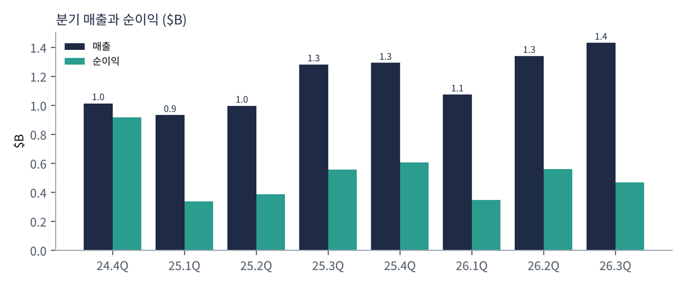
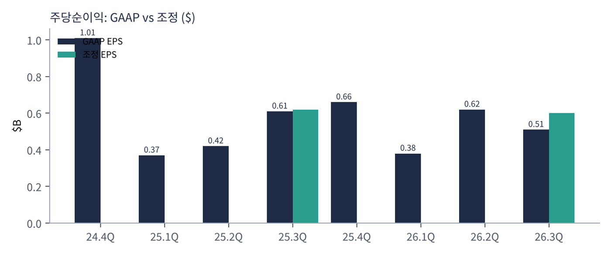
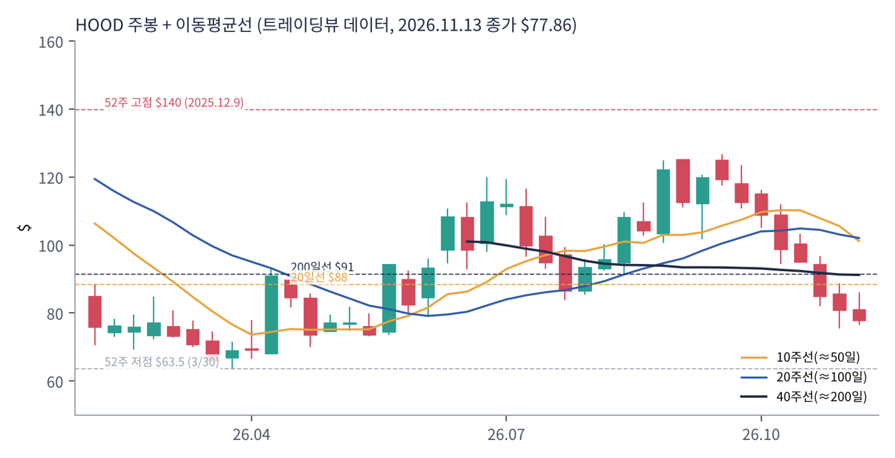
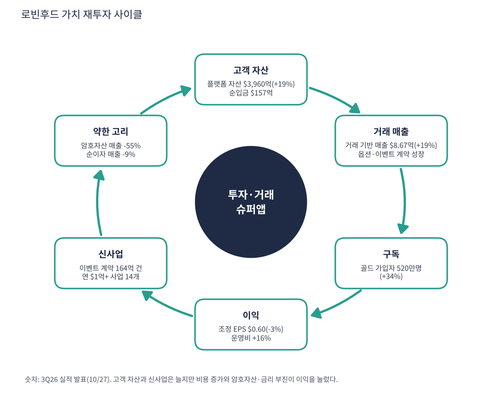

로빈후드는 미국 개인 투자자를 위한 모바일 중심 투자 플랫폼이다. 주식·옵션·암호자산·이벤트 계약(예측시장) 거래, 마진 대출과 현금 이자, 골드 구독, 신용카드와 은퇴 계좌 등으로 돈을 번다. 3분기 매출은 기록($14.2억, +12%)이지만 운영비가 +16% 늘고 암호자산 매출이 -55%여서 순이익은 -14%다. 회사는 이번 분기부터 조정 순이익·조정 EPS 지표를 새로 도입했다.
| 항목 | 내용 |
|---|---|
| 종목 | Robinhood Markets, Inc. (HOOD) · NASDAQ · 온라인 증권·핀테크 · 본사 미국 캘리포니아주 멘로파크 |
| 시가총액 | 약 $701억 · PER 35.9배(GAAP TTM) · P/S 14.4배(스캐너) (11/13 종가 $77.86) |
| 최근 분기(3Q26) | 순매출 $14.2억(+12%), 순이익 $4.76억(-14%), GAAP EPS $0.51(-16%), 조정 EPS $0.60(-3%) |
| 매출 구성 | 거래 기반 $8.67억(+19%): 옵션 $3.99억(+31%), 이벤트 계약 $1.73억(6배 이상), 주식 $1.21억(+41%), 암호자산 $1.20억(-55%) · 순이자 $4.15억(-9%) |
| 고객·자산 | 플랫폼 자산 $3,960억(+19%), 순입금 $157억(연 환산 17%), 골드 가입자 520만(+34%) |
| 비용·전망 | 운영비 $7.39억(+16%). 2026 조정 운영비+주식보상 전망 상단을 $27.5억으로 낮춤(전망 $26.75~27.75억 → 상단 -$0.25억) |
| 현금·부채 | 현금 등 약 $64억(스캐너, 회사 발표 $58억), 총차입금 약 $275억(구성 미확인), TTM EBITDA 약 $24억 |
| 다음 실적 | 4Q26 실적: 2027년 2월 16일 예정(트레이딩뷰) |
| 직책 | 인물 | 역할·특징 |
|---|---|---|
| 회장·CEO | 블라드 테네프 | 신제품 로드맵과 고객 자산 확대를 주도. 10월 순입금이 월중 $130억을 넘었고 이 중 $60억은 델 가문의 '트럼프 계좌' 출연이라고 설명 |
경영 스타일: '사업 라인을 계속 늘려 한 앱에서 모든 금융을 제공한다'. 연 환산 매출 $1억 이상인 사업이 14개로 늘었다. 3Q에는 로빈후드 체인(자체 블록체인)이 메인넷 첫 분기에 수수료 $0.5억 이상을 냈다고 밝혔다. 자사주 매입은 2024년 3Q 이후 누적 $13억(2.7억 주, 평균 약 $48)이다.
주식·옵션·암호자산·이벤트 계약·카드를 한 앱에서 제공한다. 이벤트 계약은 3Q에 164억 건이 거래돼 1년 전보다 7배 이상이다.
개인 투자자 중심에서 자산 관리·결제·예측시장까지 넓히는 방향이다. 단, 이벤트 계약은 일부 주에서 소송이 걸려 있다.
| 분기 | 매출 | 순이익 | EPS | 조정 EPS | 특이 사항 |
|---|---|---|---|---|---|
| 2024.4Q | $10.1억 | $9.2억 | 1.01 | – | |
| 2025.1Q | $9.3억 | $3.4억 | 0.37 | – | |
| 2025.2Q | $10.0억 | $3.9억 | 0.42 | – | |
| 2025.3Q | $12.8억 | $5.6억 | 0.61 | 0.62 | |
| 2025.4Q | $12.9억 | $6.0억 | 0.66 | – | |
| 2026.1Q | $10.8억 | $3.5억 | 0.38 | – | |
| 2026.2Q | $13.4억 | $5.6억 | 0.62 | – | |
| 2026.3Q | $14.3억 | $4.7억 | 0.51 | 0.60 | 미실현 손실 $0.67억($0.07) 포함, 조정 EPS 신설 |


조정 EPS는 로빈후드가 2026년 3Q에 새로 도입한 비GAAP 지표라 3Q25($0.62)와 3Q26($0.60)만 회사 발표에 있고 나머지 분기는 '–'이다(트레이딩뷰 Reported는 GAAP과 같음). 매출·순이익은 스캐너 값으로 3Q26 회사 발표(순매출 $14.2억, 순이익 $4.76억)와 약간 다르다.
흐름 요약: 분기 매출은 $9.3~14.3억으로 2025년 3Q 이후 $13억 안팎까지 늘었지만, 4Q24 순이익 $9.2억은 이후 분기보다 크게 높고 원인은 확인하지 못했다. 최근 8분기 GAAP EPS는 $0.37~$1.01, 3Q26은 $0.51로 전년 $0.61보다 낮다. 영업이익과 분기 설비투자의 8분기 값은 구하지 못해 표에서 뺐다.
| 구분 | 3Q26 | 전년 대비 | 비고 |
|---|---|---|---|
| 거래 기반 매출 | $8.67억 | +19% | 순매출의 약 61%(내 계산) |
| 옵션 | $3.99억 | +31% | |
| 이벤트 계약 | $1.73억 | 6배 이상 | 전분기 대비 +11% |
| 주식 | $1.21억 | +41% | |
| 암호자산 | $1.20억 | -55% | 전분기 $1.00억에서 회복 |
| 순이자 매출 | $4.15억 | -9% | 증권 대여·단기 금리 하락 영향 |
| 기타(구독 등) | $1.38억 | – | 순매출 − 거래 − 순이자(내 계산) |
| 순매출 합계 | $14.2억 | +12% |
옵션과 이벤트 계약이 성장을 끌고 암호자산과 금리 수익이 발목을 잡는다. 이벤트 계약은 일부 주 소송 위험이 있다(네바다 등).
로빈후드의 방향은 '개인 투자자를 평생 고객으로 잡고 사업 라인을 계속 늘리는 것'이다.
| 축 | 최근 움직임 |
|---|---|
| 고객 자산 | 플랫폼 자산 $3,960억(+19%), 10월 순입금 월중 $130억 이상(트럼프 계좌 $60억 포함) |
| 신사업 | 이벤트 계약 164억 건, 로빈후드 체인 메인넷, 연 $1억+ 사업 14개 |
| 비용 | 2026 조정 운영비+주식보상 전망 상단 $27.5억으로 하향 |
| 주주환원 | 자사주 누적 $13억 |

| 이동평균 | 값 | 종가 대비 | 해석 |
|---|---|---|---|
| 5일선 | $81.69 | -4.7% | 현재가가 아래 |
| 20일선 | $88.42 | -11.9% | 하향 |
| 50일선 | $103.25 | -24.6% | 고점 후 하향 |
| 100일선 | $102.57 | -24.1% | 하향 |
| 200일선 | $91.41 | -14.8% | 현재가가 아래 |
주봉 흐름: 2025년 12월 고점 $139.8(12/9) → 2026년 2월 급락(저가 $70.4) → 3월 저점 $63.5(3/30) → 6~9월 $93~127로 회복 → 10월 급락 → 11/2 주 저가 $75.5 → 11/9 주 종가 $77.9.
| 규칙 | 기준 | 현재 값 | 신호 |
|---|---|---|---|
| 장기 추세 필터 | 종가 vs 200일선 | $77.86 < $91.41 | 매도 |
| 중장기 교차 | 50일선 vs 200일선 | $103.25 > $91.41 | 매수 |
| 단기 교차 | 20일선 vs 50일선 | $88.42 < $103.25 | 매도 |
| 돈키언 채널 | 55일 고가 $126.74 / 저가 $75.51 | 중간값 $101.12 아래 | 매도 |
| 1개월 모멘텀 | 21거래일 수익률 | -25.1% (기준 $103.99) | 매도 |
| 3개월 모멘텀 | 63거래일 수익률 | -19.1% (기준 $96.25) | 매도 |
| 6개월 모멘텀 | 126거래일 수익률 | +0.9% (기준 $77.14) | 매수 |
| 12개월 모멘텀 | 252거래일 수익률 | -41.4% (기준 $132.98) | 매도 |
| 종합 (8개 평균) | -0.50 | 매도 우위 |
해석: 8개 중 2개 매수(50/200일선, 6개월 모멘텀), 6개 매도로 -0.50(매도 우위). 6개월 모멘텀은 기준 $77.14와 겨우 $0.7 차이라 곧 매도로 바뀔 수 있다. 14일 ATR $5.08 (6.5%).
| 가격 | 무엇이 바뀌나 | 의미 |
|---|---|---|
| $77.1 이탈 | 6개월 모멘텀 | 매수 → 매도(점수 -0.75로 하락) |
| $88.4 상향 돌파 | 20일선 | 단기 추세 회복 |
| $91.4 상향 돌파 | 200일선 | 장기 추세 필터 매도 → 매수 |
| $96.3 상향 돌파 | 3개월 모멘텀 | 추가 1개 전환 |
| $101.1 상향 돌파 | 돈키언 중간값 | 55일 채널 전환 |
| 구분 | 가격대 | 근거 |
|---|---|---|
| 저항 1 | $81.7 | 5일선 |
| 저항 2 | $88 ~ 91 | 20일선·200일선 |
| 지지 1 | $75.5 | 55일 저점(11/2 주 저가) |
| 지지 2 | $63.5 | 52주 저점(3/30) |
추세 추종으로는 매수 구간이 아니다. 저점 반등을 노리는 역추세라면 $72~79에서 계획 비중의 30%만 진입하고 종가 $69(11/2 주 저점 $75.5 아래) 이탈 시 손절한다. 1차 목표 $88(20일선), 2차 $91(200일선, 내 가정). 20일선 회복 전에는 비중을 늘리지 않는다.
| 악재 요인 | 내용 | 강도 |
|---|---|---|
| 비용 증가 | 운영비 +16%가 매출 +12%보다 빠름 | 중간 |
| 암호자산·금리 | 암호자산 매출 -55%, 순이자 -9% | 중간 |
| 이벤트 계약 규제 | 일부 주 소송 | 중간 |
| 밸류에이션 | PER 36배, P/S 14배 | 중간 |
| GAAP·조정 EPS 격차 | 3Q $0.51 vs $0.60 | 참고 |
| 티커 | 회사 | 시가총액 | PER(TTM) | PEG | P/S | EPS 성장(YoY) |
|---|---|---|---|---|---|---|
| HOOD | 로빈후드 | $70B | 35.9배 | – | 14.42배 | -10% |
| COIN | 코인베이스 | $34B | 적자 | – | 8.22배 | -124% |
| CRCL | 서클 | $16B | 34.9배 | – | 5.64배 | +0% |
모두 트레이딩뷰 GAAP TTM 기준이다. 사업 구조가 달라 참고용이다.
HOOD는 증권사 특성상 총차입금이 크고 이 숫자를 일반 기업처럼 읽을 수 없다. 스캐너 총차입금 약 $275억은 고객 관련 조달 등이 포함될 수 있어 구성을 확인하지 못했다.
| 지표 | 값 | 계산·출처 | 해석 |
|---|---|---|---|
| 현금 등 | 약 $64억 | 스캐너(회사 발표 $58억) | 고객 자산 포함 여부 미확인 |
| 총차입금 | 약 $275억 | 스캐너 | 구성 미확인, EV 계산에 쓰지 않음 |
| TTM EBITDA | 약 $24억 | 스캐너 | 시총 ÷ EBITDA 약 29배(내 계산) |
| TTM 잉여현금흐름 | 약 -$27억 | 스캐너 | 증권사 영업현금 변동이 커서 의미 낮음 |
| 자사주 | 누적 $13억 | 회사 발표 | 2.7억 주, 평균 약 $48 |
| 기준 | 값 | 비고 |
|---|---|---|
| P/S (스캐너) | 14.4배 | 트레이딩뷰 값 |
| P/S (내 계산) | 약 13.6배 | 시총 $701억 ÷ TTM 매출 $51.4억 — 스캐너와 차이 원인 미확인 |
| 동종 | COIN 8.2, CRCL 5.6 | 11/13 스캐너 |
해석: 매출 대비 가치가 암호자산 동종보다 높다. 스트레스 가정(TTM GAAP EPS $2.17 고정, 내 가정): PER 25배면 주가 약 $54(-30%), 30배면 $65(-17%), 40배면 $87(+11%)이다. 현재는 35.9배다.
| 지표 | 값 | 판정 |
|---|---|---|
| PER (GAAP TTM) | 35.9배 | TTM EPS $2.17 |
| PER (조정, 3Q 연환산) | 약 32.4배 | 조정 EPS $0.60 ×4 = $2.40 (내 가정) |
| 시총 ÷ EBITDA (TTM) | 약 29배 | $701억 ÷ $24억 (EV는 차입금 성격 때문에 계산하지 않음) |
| 방식 | PER | EPS 성장률 | PEG | 판정 |
|---|---|---|---|---|
| 트레이딩뷰 (GAAP TTM) | 35.9배 | -10.1% | 산출 불가 | 성장률 음수 |
| 3Q26 GAAP EPS $0.51 ÷ 3Q25 $0.61 | – | -16% | 산출 불가 | 회사 발표 |
| 3Q26 조정 EPS $0.60 ÷ 3Q25 $0.62 | 약 32.4배(연환산) | -3% | 산출 불가 | 회사 발표, 성장률 음수 |
판정: PEG는 산출 불가다. TTM·분기 모두 EPS가 전년보다 줄었다. GAAP과 조정의 차이($0.09)에는 미실현 손실 $0.07가 포함돼 있으나 나머지 $0.02의 원인은 확인하지 못했다. 가치 판단은 PER 35.9배와 매출·고객 자산 성장 속도로 한다.

사이클은 고객 자산 유입 → 거래·구독 매출 → 이익 → 신사업 투자다. 비용 증가와 암호자산·금리 부진이 약한 고리다.
| 고리 | 현재 숫자 | 고리 강도 | 약해지는 신호 |
|---|---|---|---|
| ① 고객 자산 | 플랫폼 자산 +19%, 순입금 연 17% | 강함 | 시장 하락, 순입금 둔화 |
| ② 거래 매출 | 거래 기반 +19%, 옵션 +31% | 강함 | 거래량 감소 |
| ③ 구독 | 골드 가입자 520만(+34%) | 강함 | 해지 증가 |
| ④ 이익 | 조정 EPS -3%, 운영비 +16% | 부담 | 비용이 매출보다 빠르게 증가 |
| ⑤ 암호·금리 | 암호자산 -55%, 순이자 -9% | 약함 | 금리 추가 하락 |
| ⑥ 규제 | 이벤트 계약 소송 | 위험 | 주 단위 금지 확대 |
구조: 강한 고리는 ①②③, 약한 고리는 ④⑤⑥이다.